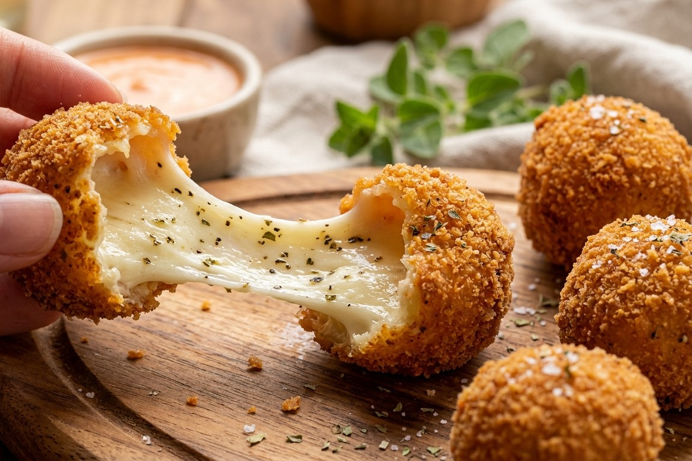
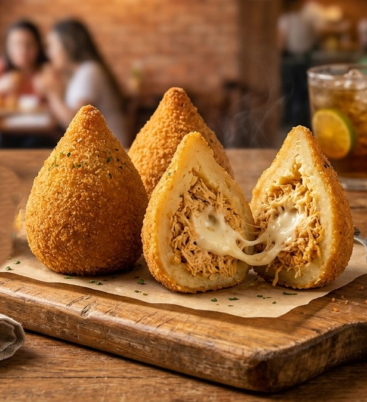
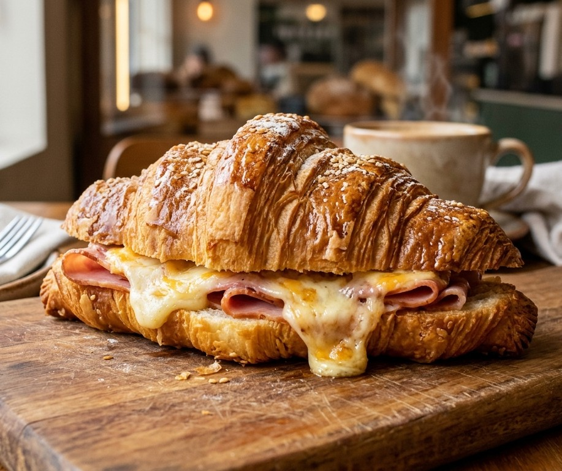
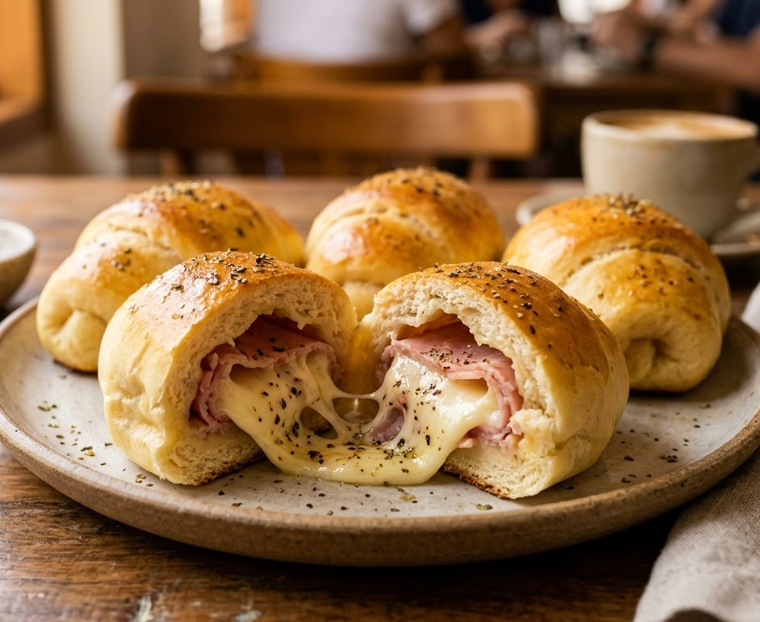
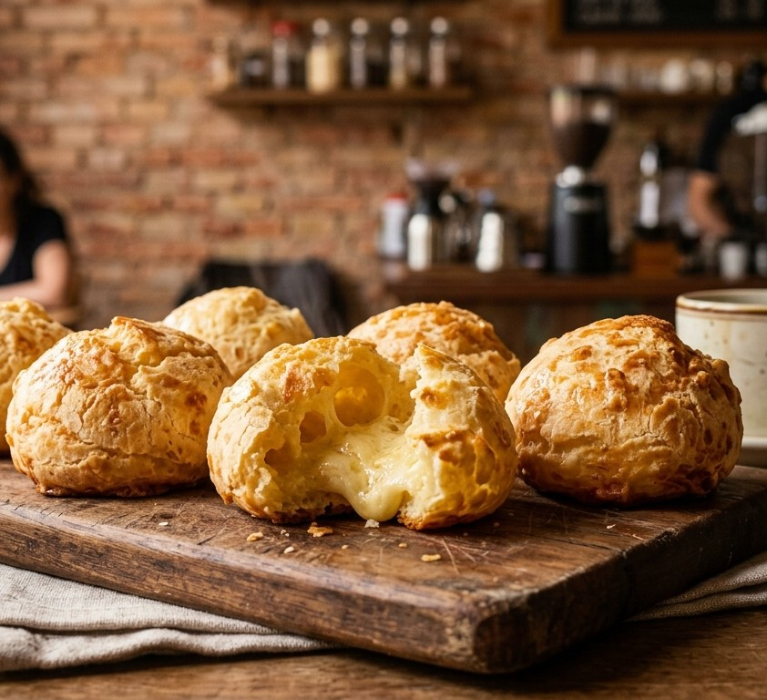
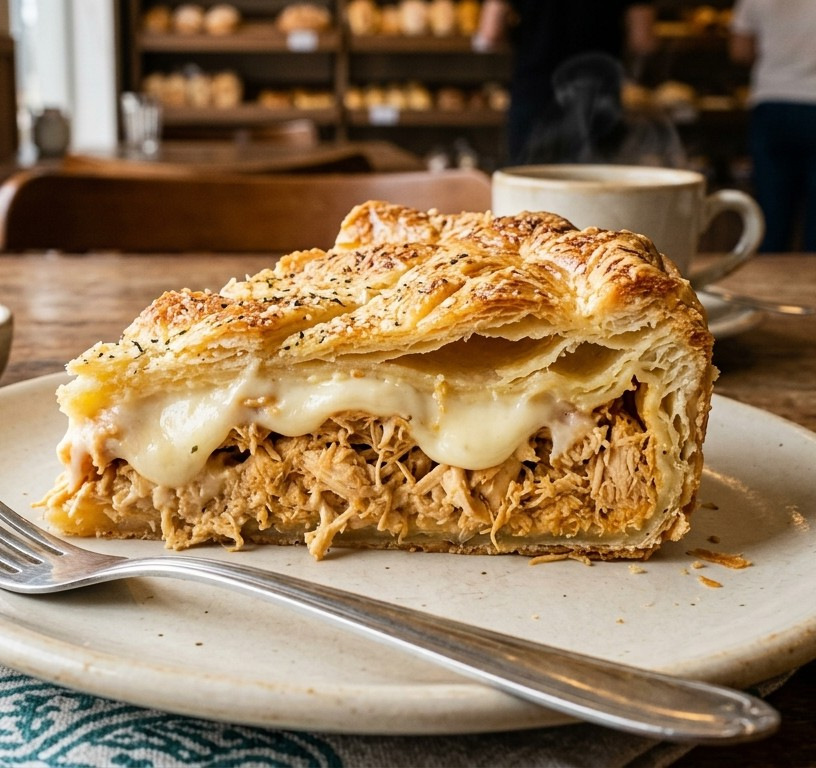

-
Bolinha de Queijo
Crocante por fora e com um recheio abundante de queijo muçarela derretido que puxa, levemente temperado com orégano.
R$ 5,00

-
Coxinha de Frango com Catupiry
Massa leve, sequinha e crocante, recheada com frango desfiado temperado artesanalmente e catupiry legítimo.
R$ 8,50

-
Croissant de Presunto e Queijo
Massa folhada amanteigada, dourada e crocante, recheada generosamente com presunto suculento e queijo derretido.
R$ 18,00

-
Enroladinho de Presunto e Queijo
Massa macia assada na medida certa, envolvendo recheio clássico de presunto e queijo derretido com um toque de orégano.
R$ 8,50

-
Pão de Queijo Artesanal
Feito com queijo curado de Minas, casquinha crocante por fora e um interior extremamente macio e saboroso.
R$ 6,50

-
Torta de Frango com Catupiry
Fatia generosa de torta com massa folhada amanteigada, recheada com frango desfiado e catupiry legítimo.
R$ 20,00
